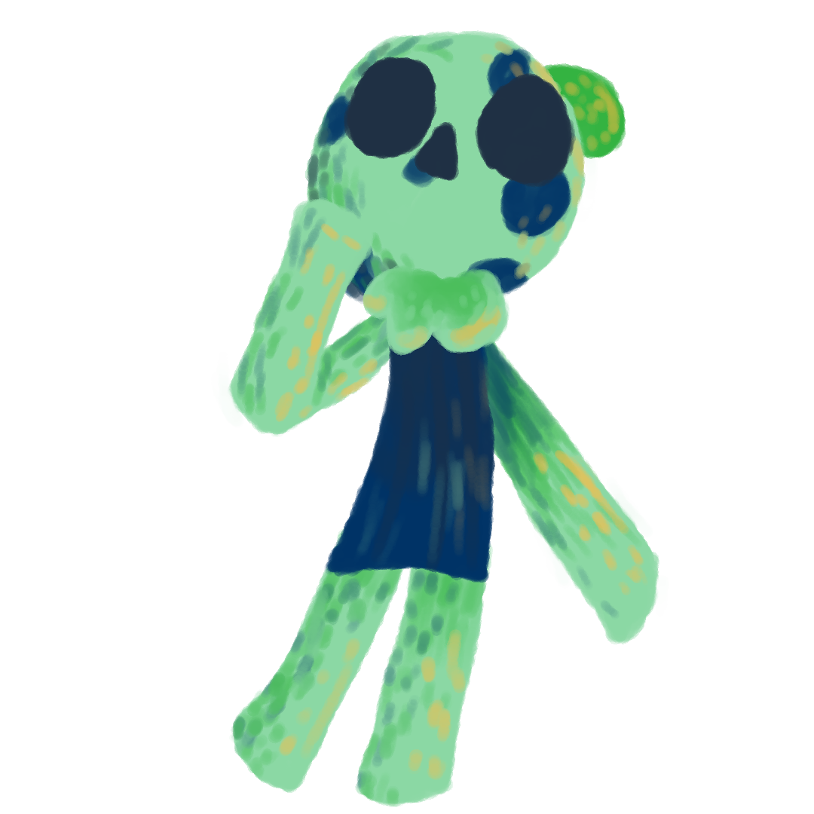

No tienen género ni edad, simplemente un conjunto de características y personalidades en cada uno de ellos. Escapan y se esconden de la vista humana y ayudan a otros para poder ubicarse en el bosque.

Un Eco es una criatura mística del bosque la cual, viven en
más profundo del mundo dónde aprenden tanto de
ellos como de su entorno.

No tienen género ni edad, simplemente un conjunto de características y personalidades en cada uno de ellos. Escapan y se esconden de la vista humana y ayudan a otros para poder ubicarse en el bosque.
Es el líder aprendíz, al mando de la expedición. Tiene una actitud alegre, paciente y un poco complaciente. Tiene la capacidad de transformarse en un escarabajo rinoceronte.
Es quien se encuentra al mando de manera temporal y general de los Ecos. Totalmente recto y bastante centrado, pero demasiado duro como para tener el tacto y alegría de un líder. Puede transformarse en una piedra.

El mejor en esconderse, es él, tranquilo pero bastante perpicaz, paciente pero un poco flojo. Tiene el objetivo de entender cada vez más el arte del camuflaje explorando y observando sus alrededores. Se puede transformar en musgo

El más sereno de todo el grupo e incluso solitario, es un cazador nocturno experto en idear y llevar a cabo planes de cualquier tipo. Tiende a ser un poco depresivo. Puede camuflarse controlando la luz de su pelaje haciéndose más o menos brillante. No puede transformarse
El más pequeño de los Ecos, con una afición con las cosas brillantes sobretodo si son humanas, gran curioso y entusiasta pero bastante nervioso, lo cual le provoca problemas a la hora de usar sus habilidades; como rastrear objetos a cierto rango con las esporas de la cabeza.
Ellos buscan ayudar de alguna manera a los que pasan en el bosque como animales y a los humanos también pero de manera desapercibida. Y más que ello, también poder encontrarse y juntos crecer emocionalmente contra la adversidad de diversas situaciones complejas tanto físicamente como emocionalmente.